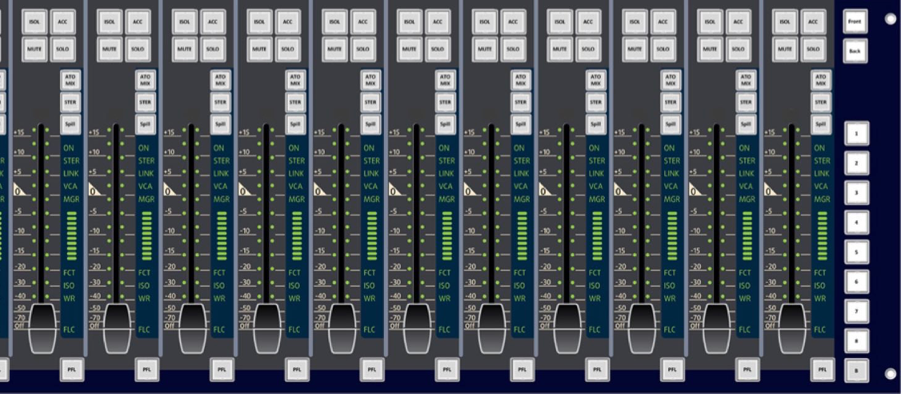

- 全IP化设计，可与已有网络无缝衔接
- 适合多种应用场景
- 仅使用网线连接，大大减少线缆数量
- 可实现分布式结构，同网络DSP资源共享
- 21寸超大全彩多点触屏
- 所有旋钮按键均有背光辅助
- 每推子模块拥有12个通道条，高效利用空间
- 灵活的触屏架构，解放操作人员的工作流程和控制理念
- 内置EBU R128标准响度表
- 内置10段参数均衡器
- 支持超过800个音频通道和128条总线
- 多声道处理架构（单声道、立体声、4.0、5.0、5.1、7.1）

- 充足的混音总线峰值储备
- 输入信号无过载，借助40位浮点算法，提供最一流的音质
- 卓越的话筒模数转换器：32位TrueMatch模数转换，线路内动态范围超过158dB(A)
- 24位线路输入输出TrueMatch转换，动态范围分别为133dB(A)和131dB(A)@24dBu
- 支持多种数字音频格式
支持第三方平台遥控
使用多种控制协议（AES70，OCA，EMBER+，RAS，ROSS，Mosart，MIDI等等）
数字音频工作站集成
支持所有主流数字音频工作站
逻辑控制
为256个输入输出信号自定义功能
矩阵混音器
32 X 32路信号，包括1024个增益控制或160个增益控制加延时设置
上变换
集成了来自DSPECAIALISTS的ISOSTEM上变换算法
通道编组
VCA、哑音、联动、立体声、5.1
自动化
快照自动化、场景自动化、动态自动化
群组切换
集成的N-1矩阵，最多有96路N-1总线